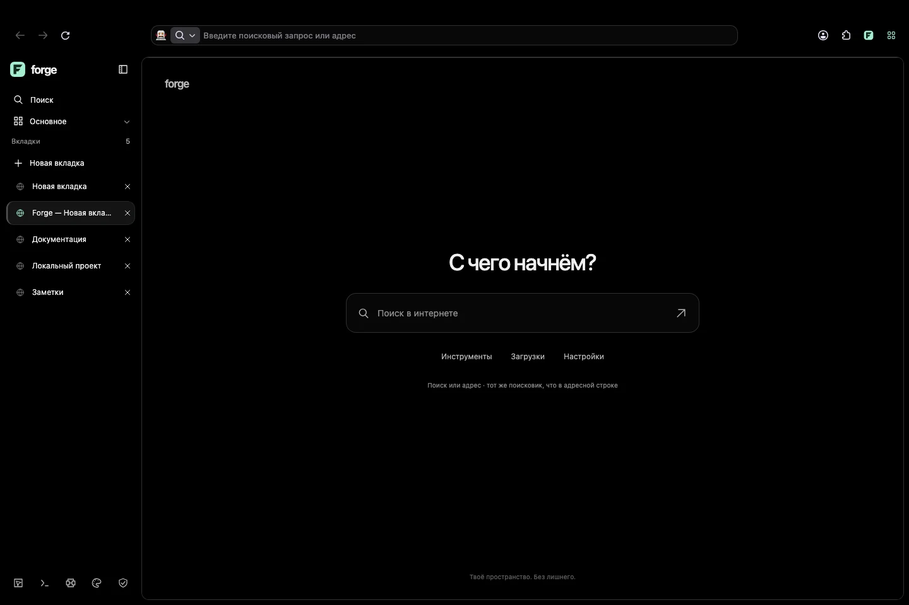

01 / ORGANIZE
У каждого проекта
своё место.
Вертикальные вкладки, рабочие пространства и нативные группы. Переключай контекст, а не ищи нужную страницу.
РАБОЧИЕ ПРОСТРАНСТВА Разработка 12 Исследование 8 Личное 4
Меньше лишнего. Больше пространства для твоих идей.
Forge объединяет основу Firefox и интерфейс, который можно сделать своим.
macOS · Windows · Linux Бесплатно. Открытый код.

СОБЕРИ СВОЮ СРЕДУ
Привычные возможности браузера остаются.
Меняется то, как удобно ими пользоваться.
Вертикальные вкладки, рабочие пространства и нативные группы. Переключай контекст, а не ищи нужную страницу.
Нативный split view для документации и проекта, сравнения и заметок. Без постоянного переключения туда-сюда.
Плотность, положение панели, акценты и горячие клавиши — в редакторе интерфейса. AMOLED по умолчанию, Glass по настроению.
БЕЗ ЧЁРНОГО ЯЩИКА
Forge — независимый открытый форк, а не официальный продукт Mozilla. Мы показываем, что изменено, что проверено и что ещё предстоит сделать.
Изменения приватности desktopВ desktop отключены рекламные поверхности, рекомендации и известные каналы отправки телеметрии. Это не гарантия отсутствия всего фонового трафика и не блокировщик рекламы на сайтах.
TLS, Safe Browsing, проверка сертификатов и подписей не отключены. Полноценного независимого аудита безопасности пока не было.
Штатные Firefox DevTools, нативные вкладки и настройки — не веб-оболочка поверх браузера. Пакеты desktop используют artifact-сборки Gecko от Mozilla.
НАЧНИ С НОВОГО ПРОСТРАНСТВА
Реальные сборки. Открытые исходники. Никаких форм регистрации.
Это development-версия, не стабильный браузер. Автоматического сервиса обновлений безопасности пока нет. Не заменяй ею актуальный основной браузер для чувствительных задач.
Для Mac с процессорами Apple M-серии
Русская локализация, отдельный профиль Forge. После подписи пройдено 285 браузерных проверок. Билет Apple прикреплён к приложению.
Скачать для Apple SiliconДля Mac с процессорами Intel x86_64
Нотарификация и Gatekeeper пройдены. После подписи требуется повторный тест на Intel Mac. Локальный тест через Rosetta дал тайм-аут и у исходной, и у подписанной сборки.
Скачать для Intel260 проверок на нативном CI-раннере. Распакуй архив и запускай Forge.cmd, не вложенный firefox.exe. Подписи издателя Forge нет.
Нативный пакет ARM64, 260 проверок на ARM-раннере. Запускай через Forge.cmd с отдельным development-профилем. Подписи издателя Forge нет.
260 браузерных проверок на Ubuntu 24.04. Распакуй архив и запускай ./forge, не вложенный firefox. Потребуются системные зависимости Firefox.
Нативный ARM64-пакет, 260 проверок на ARM-раннере. Запускай ./forge с отдельным профилем. Это не пакет для Android.
Отдельный одновкладочный прототип: HTTPS, поиск и базовая навигация. Unit-тесты, lint и два теста в x86_64-эмуляторе пройдены. Физические ARM-устройства не проверены; подпись отладочная.
Скачать APK · ARM64Одновкладочный прототип на системном WebKit, не Gecko. Сборка 0.1.0 (2) отправлена на внешнюю бета-проверку Apple. Открытой ссылки на TestFlight пока нет.
Не устанавливаются на iPhone как обычный IPA.
iOS Simulator · ZIPНеподписанный device XCArchiveПроверяй то, что скачиваешь.
Контрольные суммы SHA-256Коммиты и сведения о сборках
Нотарификация Apple — проверка подписи и пакета, а не аудит приватности или одобрение App Store. Не отключай Gatekeeper, SmartScreen или Play Protect ради установки.
ПОЛЕЗНО ЗНАТЬ
Настольный Forge — независимый форк Mozilla Firefox с изменениями интерфейса и настроек. Текущие artifact-сборки используют скомпилированный Gecko от Mozilla, а не независимо пересобранный C++/Rust-движок. История Mozilla, MPL-2.0 и лицензии зависимостей сохранены.
Мы пока не рекомендуем это для чувствительных задач. Сборки предварительные, автоматического сервиса обновлений безопасности нет. Длительная работа с реальными аккаунтами, физические мобильные устройства и полный сетевой аудит остаются непроверенными.
Штатные launchers Forge выбирают отдельный development-профиль. На Windows запускай Forge.cmd, на Linux — ./forge, на Mac — Forge.app. Не запускай напрямую вложенный Firefox и не указывай свой основной профиль при экспериментировании.
Интерфейс Forge поддерживает русский и английский. Нотарифицированная macOS Apple Silicon-сборка также включает русские ресурсы базового Firefox и словарь. Другие desktop CI-пакеты используют en-US для базовых ресурсов. Оба мобильных прототипа имеют русский и английский интерфейс.
Нет. Android использует GeckoView, iOS — системный WebKit. Это отдельные минимальные прототипы без рабочих пространств, расширений, синхронизации и надёжного восстановления сессии. iOS пока ожидает внешнюю проверку TestFlight.